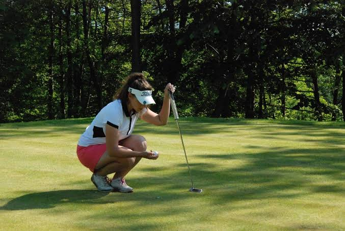
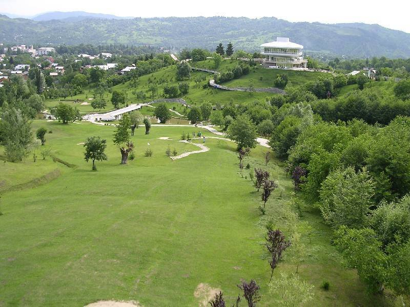

Casa Rodica
Refugiul verde al Brezei
O vilă întreagă pe un hectar de livadă, cu piscină, foișor și trei zone de divertisment. Până la 20 de oaspeți.
Descoperă Casa RodicaPuțină lume știe că Breaza este una dintre destinațiile de golf din România — un teren pitoresc, în cadru subcarpatic, la câteva minute de centrul stațiunii.

Breaza are o tradiție discretă, dar reală, în golf: un teren amenajat într-un peisaj de dealuri și verdeață, la doar câteva minute de casă. Este alegerea potrivită pentru o dimineață activă, urmată de relaxare la întoarcere.
Terenul din Breaza se remarcă prin cadrul natural generos — fairway-uri pe relief blând, aer curat de stațiune și priveliști spre dealurile din jur. Este un loc plăcut atât pentru jucătorii experimentați, cât și pentru cei care vor să încerce sportul pentru prima dată.
Fiind la câteva minute de casă, poți juca o rundă dimineața și te poți întoarce la prânz pentru o masă în tihnă.
Golful se împacă bine cu restul zonei: o drumeție ușoară pe dealurile Brezei, o vizită la Mănăstirea Breaza sau o plimbare prin centrul stațiunii pot completa ziua.
Pentru grupuri, o combinație de golf, drumeții ușoare și seri relaxate transformă un simplu weekend într-o mini-vacanță activă.

La întoarcere, Breaza te așteaptă cu liniștea ei de stațiune climaterică și cu plimbări tihnite prin verdeață. Este echilibrul perfect între mișcare și odihnă.
Golful nu este rezervat experților. Terenul din Breaza este un loc bun pentru a încerca sportul: poți lua o lecție introductivă, poți închiria echipamentul și te poți bucura de mișcare în aer liber, într-un cadru relaxat.
Pentru grupuri, o dimineață de golf urmată de un prânz în tihnă este o combinație care place tuturor, chiar și celor care doar privesc.
Dincolo de golf, zona Brezei se pretează la drumeții ușoare și plimbări cu bicicleta, așa că ziua activă poate continua în aer liber.

Nu. Terenul este potrivit și pentru începători — poți lua o lecție și poți închiria echipamentul la fața locului.
Din primăvară până toamna târziu, când vremea permite jocul în aer liber.
Terenul de golf din Breaza este la doar câteva minute de centrul stațiunii.
Cazare în Breaza
O vilă întreagă pe un hectar de livadă, cu piscină, foișor și trei zone de divertisment. Până la 20 de oaspeți.
Descoperă Casa RodicaCasa de poveste cu mansardă „Hobbit", living de 100 mp și ceaun pentru 30. Până la 20 de oaspeți.
Descoperă Casa Alinka